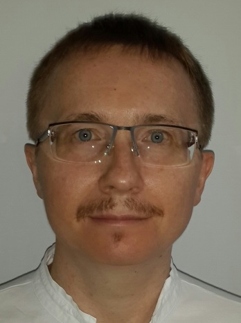

Dmitriy Proshutin
|  | A former physicist with 20+ years of experience in information security and system administration |
WHY SWITCHING TO BECOME A DEVELOPER
It has been my dream for quite a while to become a developer. And there were always some obstacles to fulfil my wish. Finally, time has come. There would be a great battle ahead. I am certain that with Attractor School Almaty, my dream will come true. Scroll the long-read HR bullshit below and go to the Pursuit section directly ;)
PROFESSIONAL EXPERIENCE
Philip Morris Kazakhstan LLP (Almaty, Kazakhstan)
Senior IS Analyst, Information Protection and Governance (4y 7m: Apr, 2014 – Oct, 2018)
- Led projects to deploy corporate security solutions at the affiliate's level
- Automated access to unstructured data, prevented data leakage, managed privileged access, analyzed automated content
- Leveraged supplier assessment and audit forms
- Prepared supplemental agreement on information security requirements with business partners who host or process company data
- Coordinated vulnerability assessments of third-party solutions used for outsourcing services
- Periodically monitored criticality and risk assessments for 70+ information systems and new projects to protect confidentiality, integrity and availability of company data
- Deployed security requirements for locally managed e-banking and payroll systems and interfaces
- Coordinated and followed up on information risks mitigation actions
- Facilitated business impact analysis and application/infrastructure continuity plans development
- Coordinated simulation tests, checklist verification
- Supported IS-related audits performed by internal and external auditors, including annual audits for IT general controls
- Executed and coordinated corporate Information Security controls
- Controlled main security KPI's: computer malware (anti-virus) protection, security patch management, server and workstation security baseline compliance
- Coordinated monthly, quarterly and annually performed IT controls
- Prepared internal reviews of access and change management
- Conducted regular security awareness sessions for the company employees and contractors
- Coordinated affiliate's processes for retention of company information
- Led and coached the departmental coordinators' team of about 60-70 people
Senior IS Analyst, Security (4y 4m: Dec, 2009 – Mar, 2014)
- Periodically monitored criticality and risk assessments for 70+ information systems and new projects to protect confidentiality, integrity and availability of company data
- Coordinated and followed up on information risks mitigation actions
- Facilitated business impact analysis and application/infrastructure continuity plans development
- Coordinated simulation tests, checklist verification
- Supported IS-related audits performed by internal and external auditors, including annual audits for IT general controls
- Controlled main security KPI's: computer malware (anti-virus) protection, security patch management, server and workstation security baseline compliance
- Coordinated monthly, quarterly and annually performed IT controls
- Prepared internal reviews of access and change management
- Conducted regular security awareness sessions for the company employees and contractors
IS Analyst, Security and Planning(9 m: Mar, 2009 – Nov, 2009)
- Periodically monitored criticality and risk assessments for 70+ information systems and new projects to protect confidentiality, integrity and availability of company data
- Coordinated and followed up on information risks mitigation actions
- Facilitated business impact analysis and application/infrastructure continuity plans development
- Coordinated simulation tests, checklist verification
- Supported IS-related audits performed by internal and external auditors, including annual audits for IT general controls
- Controlled main security KPI's: computer malware (anti-virus) protection, security patch management, server and workstation security baseline compliance
- Coordinated monthly, quarterly and annually performed IT controls
- Prepared internal reviews of access and change management
- Conducted regular security awareness sessions for the company employees and contractors
IS Technical Analyst (1y 5m: Oct, 2007 – Feb, 2009)
- AdministeredActive Directory objects and group policies on affiliate's level
- Supported server and telecommunication infrastructure
- Managed project management for the mail server's migration
- Supported the Information Security Officer in IS/IT audit exercises
Siemens LLP (Almaty, Kazakhstan)
Information Security Officer/Systems Administrator (5y 7m: Mar, 2002 – Sep, 2007)
- Supported Siemens AG public key infrastructure on affiliate's level
- Ordered, distributed, replaced, disposed smart cards with private keys
- Provided technical support of email encryption software
- Complied Kazakhstan government's requirements for encryption use
- Facilitated Disaster Recovery plans development
- Verified incident management plans for most critical servers and applications
- Updated and maintained of the IS Continuity manual
- Ensured compliance with corporate network standards' requirements
- Secured network baseline for modems, switches, servers
- Made the discovery and vulnerability scanning of the local network
- Administeredremote access through VPN
- Designed and implementedbusiness partner's connection
- Provided Corporate Security Policies Promotion
- Supervised and supported Information Security Advisers' team
- Translated of corporate security policies into local language
- Secured awareness trainings for employees, sessions for promotion of encryption usage
- AdministeredActive Directory on domain level, mail server administration, patch management
Systems Administrator (2y 1m: Jan, 2000 – Feb, 2002)
- Administered Active Directory on domain level, mail server administration, patch management
- Provided support to end-users
- Developed and maintained installation and configuration procedures
- Contributed to and maintained system standards
- Researched and recommended innovative, and where possible automated approaches for system administration tasks
- Identified approaches that leverage our resources and provided economies of scale
- Performed regular security monitoring to identify any possible intrusions
- Performed daily backup operations, ensuring all required file systems and system data are successfully backed up to the appropriate media, recovery tapes or disks are created, and media is recycled and sent off site as necessary
- Performed regular file archival and purge as necessary
- Created, changed, and deleted user accounts per request
NURSAT LLP (Almaty, Kazakhstan)
Systems Administrator (1y 9m: May, 1998 – Jan, 2000)
- Administered Windows NT 4.0 domain/Netware OS servers
- Provided support to end-users
- Developed and maintained installation and configuration procedures
- Contributed to and maintained system standards
- Researched and recommended innovative, and where possible automated approaches for system administration tasks
- Identified approaches that leverage our resources and provided economies of scale
- Performed regular security monitoring to identify any possible intrusions
- Performed daily backup operations, ensuring all required file systems and system data are successfully backed up to the appropriate media, recovery tapes or disks are created, and media is recycled and sent off site as necessary
- Performed regular file archival and purge as necessary
- Created, changed, and deleted user accounts per request
EDUCATION
Kazakh National Research Technical University named after K.Satbayev (Almaty, Kazakhstan)
Degree: Bachelor’s Degree in Computing and Software (with Honour)
Graduation date: 2015
GPA: 3.92
Lomonosov Moscow State University (Moscow, Russia)
Degree: Specialist Diploma in Physics
Graduation date: 1995
GPA: 4.66
PROFESSIONAL DEVELOPMENT
Participant of Bioinformatics Summer School 2017 (Moscow, Russia)
The school's lectures briefly covered the following topics such as quantitative genetics, deep learning, prediction of the effect of genetic mutations, transcriptomics, oncogenomics, immunoinformatics, and bioinformatics algorithms. The practical part was devoted to data analysis for life sciences with R and Python.
Certificate: 2017
Massachusetts Institute of Technology through edX (Online)
MITx: 7.00x Introduction to Biology - The Secret of Life
Certificate: 2017
University of California, San Diego; Coursera Inc. (Online)
Biology Meets Programming: Bioinformatics for Beginners
Certificate: 2017
A 1C accredited training center Slava VC (Almaty, Kazakhstan)
MITx: 7.00x Introduction to Biology - The Secret of Life
Certificate: 2016
ISSP Training Center-Ukraine (EC-Council accredited training center) (Almaty, Kazakhstan)
Certified Ethical Hacker v9
Certificate: 2016
A 1C accredited training center Slava VC (Almaty, Kazakhstan)
Basics of Programming in 1C Enterprise v.8.3
Certificate: 2016
Massachusetts Institute of Technology through edX (Online)
6.00.1x: Introduction to Computer Science and Programming Using Python
Certificate: 2015
Hong Kong University of Science and Technology (Online)
COMP102.1x: Introduction to Java Programming - Part 1
Certificate: 2015
Telecommunication Academy Kazinformtelecom (Almaty, Kazakhstan)
Information Security Management System (ISMS) Based on Kazakhstan's standard ISO/IEC 27001:2008
Certificate: 2013
Stanford University; Coursera Inc. (Online)
Cryptography I
Certificate: 2012
University of Toronto; Coursera Inc. (Online)
COMP102.1x: Introduction to Java Programming - Part 1
Certificate: 2015
High Tech for Human Training Center (Almaty, Kazakhstan)
Updating your Network Infrastructure and Active Directory Technology Skills to Windows Server 2008
Certificate: 2012
Firebrand Training Ltd. (Wyboston, Bedfordshire, United Kingdom)
(ISC)2 CISSP Certified Information Systems Security Professional
Certificate: 2009
ALSI (Almaty, Kazakhstan)
ITIL Foundation v. 2
Certificate: 2008
PNI (Almaty, Kazakhstan)
Philip Morris Project Management Essentials
Certificate: 2008
Different Microsoft Certified Technical Education Centers (Almaty, Kazakhstan / Moscow, Russia)
Developing Microsoft .NET Applications for Windows
Programming with the Microsoft .NET Framework (Microsoft Visual Basic .NET)
Introduction to Visual Basic .NET Programming with Microsoft .NET
Managing Microsoft Systems Management Server 2003
Implementing and Managing Microsoft Exchange Server 2003
Deploying and Managing Microsoft Internet Security and Acceleration Server 2000
Programming a Microsoft SQL Server 2000 Database
Administering a Microsoft SQL Server 2000 Database
Mastering Microsoft Access 2000 Programming
Mastering Database Fundamentals Using Microsoft Access 2000
Implementing and Administering Microsoft Windows 2000 Directory Services
Implementing a Microsoft Windows 2000 Network Infrastructure
Implementing Microsoft Windows 2000 Professional and Server
Microsoft Windows 2000 Network and Operating System Essentials
Certificates: 2001-2008
LANGUAGES
English
Advanced (C1)
IELTS Academic: 7.5
German
Basic
Russian
Native